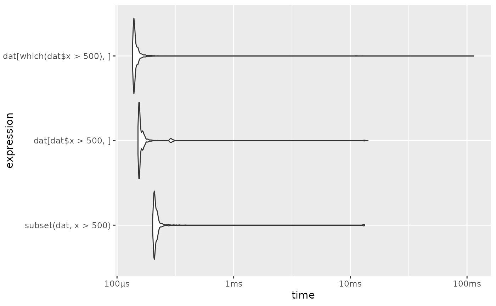

Autoplot method for bench_mark objects
autoplot.bench_mark(object, type = c("beeswarm", "jitter", "ridge", "boxplot", "violin"), ...) # S3 method for bench_mark plot(x, ..., type = c("beeswarm", "jitter", "ridge", "boxplot", "violin"), y)
| object | A |
|---|---|
| type | The type of plot. Plotting geoms used for each type are
|
| ... | Additional arguments passed to the plotting geom. |
| x | A |
| y | Ignored, required for compatibility with the |
This function requires some optional dependencies. ggplot2, tidyr, and depending on the plot type ggbeeswarm, ggridges.
For type of beeswarm and jitter the points are colored by the highest
level garbage collection performed during each iteration.
For plots with 2 parameters ggplot2::facet_grid() is used to construct a
2d facet. For other numbers of parameters ggplot2::facet_wrap() is used
instead.
dat <- data.frame(x = runif(10000, 1, 1000), y=runif(10000, 1, 1000)) res <- bench::mark( dat[dat$x > 500, ], dat[which(dat$x > 500), ], subset(dat, x > 500)) if (require(ggplot2)) { # Beeswarm plot autoplot(res) # ridge (joyplot) autoplot(res, "ridge") # If you want to have the plots ordered by execution time you can do so by # ordering factor levels in the expressions. if (require(dplyr) && require(forcats)) { res %>% mutate(expression = forcats::fct_reorder(as.character(expression), min, .desc = TRUE)) %>% as_bench_mark() %>% autoplot("violin") } }#>#> #> #> #> #>#>#>#> #>#> #> #>#> #> #>#> #> #>#>